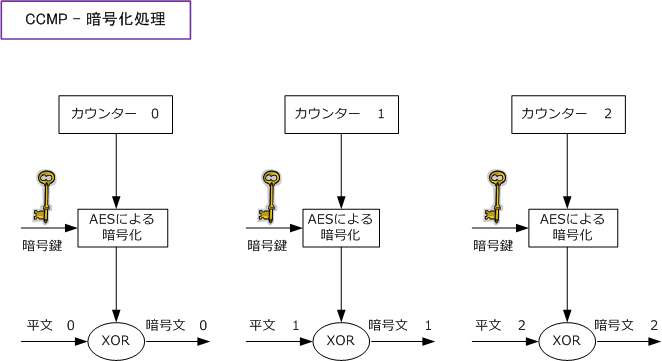
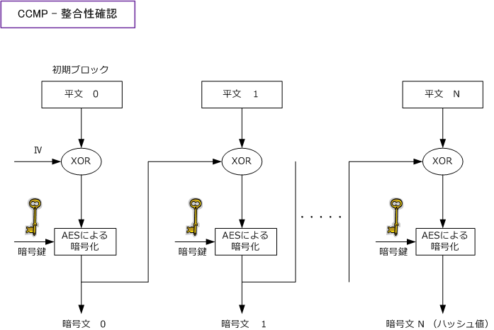
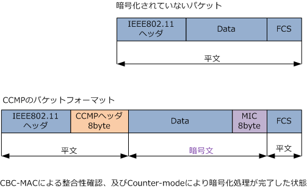
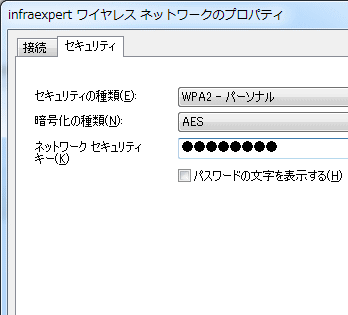
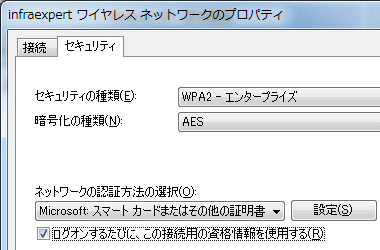

WPA2 ( Wi-Fi Protected Access 2 )
WPA2とは
WPAは IEEE802.11i が標準化されるまでの暫定的な規格であったことから、2004年6月にIEEE802.11iの 標準化作業が完了すると、2004年9月にその内容を反映してWPA2が策定されました。WPA2自体は、IEEE 802.11i の相互接続性をWiFiアライアンスが認定したものであるので、WPA2で認定されている無線機器は IEEE802.11i に準拠したものです。従って以下のWPA2の技術解説は IEEE802.11i の技術解説を意味します。
WPA2の動作はWPAと共通部分が多いです。無線LANクライアントとアクセスポイントとでやりとりされる 前回に解説したWPAの動作（ ?@アソシエーション処理、?APMKの共有、?BPTKの生成、?CGTKの生成 ）は ほとんど同じです。異なる点は、WPA2では暗号化方式にCCMP（Counter-mode CBC-MAC Protocol）を 採用していることです。CCMPはAESに基づいてデータの暗号化を行いますが、最長 256 ビットの暗号鍵を 利用できることから、WPAに比べて格段にセキュリティ強度が高くなります。
| 暗号化方式 | WEP（規格：WEP） | TKIP（規格：WPA） | CCMP（規格：WPA2） |
|---|---|---|---|
| 暗号化アルゴリズム | WEPによるRC4 (暗号の解読が容易） |
TKIPのRC4 | CCMPのAES |
| 整合性の検証 | WEPによるCRC32 (実質的にデータの改ざんを検出不可） |
TKIPのMIC | CCMPのCCM |
| 認証方式 | WEPそのものにはないが IEEE802.1X認証を採用できる |
PSK認証 or IEEE802.1X認証 | PSK認証 or IEEE802.1X認証 |
WPAは「TKIPの実装を義務化、CCMPの実装を任意」ですが、WPA2は「TKIPの実装は任意、CCMPの実装は義務化」としています。 従って、無線LANの製品により、WPAの暗号化にCCMPがあったりなかったり、WPA2の暗号化にTKIPがあったりなかったりします。 また、暗号化方式がCCMPであることから暗号化項目はCCMPとすべきなのですが、製品によってCCMPではなくAESになっています。
WPA2の暗号化方式 - CCMPの暗号化処理 ( Counter-mode ）
CCMPは暗号化アルゴリズムに最強の暗号化アルゴリズムのAESを採用しています。AESはブロック型暗号で ある事から、暗号化するメッセージを一定サイズのブロック単位に分割して処理する必要があります。しかし 一定サイズに収まらない場合もあり、この問題を回避するためCCMPではカウンターモードを採用しています。
カウンターモードでは、暗号化したいメッセージをダイレクトに暗号化するのではなくカウンターと呼ばれる 一定の値を暗号化して、この結果とメッセージのXOR（排他的論理和）をとることで暗号文を生成するのです。 これにより暗号化したいメッセージが一定の値である必要がなくなり、また、暗号化のために直接メッセージ を使用するわけではないので、メッセージ到着前に暗号化の計算を事前に行えることから高速に処理できます。

WPA2の暗号化方式 - CCMPの整合性確認 ( CBC-MAC ）
CCMPは改ざん検知に、CCM (Counter with CBC-MAC) の仕組みを採用しています。先ず最初にパケットを 特定の長さに区切った上で、その値とIVをXORしてAESの暗号化を行います。次に、この暗号化処理の結果と メッセージをXORしてAESでの暗号化を行います。この処理を繰り返し最後に得られた結果の上位8バイトを ハッシュ値として使用します。CCMPでは暗号化とハッシュ値算出用の鍵が同じであるため暗号化処理が速い。

以上の通りCCMPは暗号化処理と整合性確認を行いますが、これらは同時に実現する仕組みとなっています。
WPA2による暗号化方式 - CCMPのパケットフォーマット

WPA2 - Windowsクライアントの設定 ( PMKの共有 )
WPA2の接続シーケンスは、WPAとほぼ同じなので詳細は「WPA」でご確認下さい。?AのPMKの共有方法も WPA、WPA2ともに同じ認証方式（PSK認証またはIEEE802.1X認証）をサポートとしているので、ほぼ同じ。 異なる点として、PSK認証の設定項目においてWPAではなくWPA2を選択するということ、暗号化にはTKIPで はなくAESを選択するという点です。オプションとしてTKIPが設定項目にありますがAESを選択するのが推奨。 ※ WPA2でのPSK認証は「WPA2パーソナルモード」、WPA2での802.1X認証は「WPA2エンタープライズモード」といいます。
◇ WPA2-PSK認証 WPAと同様にPSK認証ではAPと無線LANクライアントにあらかじめパスフレーズを設定します。この値は WPAと同様に8文字以上63文字以内で指定する必要があります。総務省では21文字以上のパスフレーズの 設定を推奨としています。WPA同様に、WPA2ではこのパスフレーズから自動的にPSKを生成するのです。
| Windows Vista / 7 の設定画面 |
|---|
 |
◇ WPA-IEEE802.1X認証 IEEE802.1X認証では無線LANクライアントやアクセスポイントに手動で「認証鍵」の情報を設定しません。 IEEE802.1X認証では認証成功後に認証サーバ（Radiusサーバ）が自動的に生成しクライアントに配布します。 IEEE802.1X認証方式に応じて「EAPの種類やネットワーク認証方法の選択」設定を変更する必要があります。
| Windows Vista / 7 - 設定画面 |
|---|
 |
IEEE802.1X認証方式では、上の暗号化方式の設定以外に、以下の認証方式と認証情報の設定が必要です。 ここではWindows XPでの設定画面を紹介します。※ ワイヤレスアダプタの種類で設定画面は異なります。 ※ IEEE802.1X認証方式と認証情報の設定項目は、実装する802.1X認証の種類に応じて選択する項目やチェック項目が異なります。 ※ EAPの種類で「スマートカードまたはその他の証明書」項目を選択した場合、認証方式にEAP-TLS方式を選択したことになります。
| 各種パラメータ | Windows XP | Windows Vista | Windows 7 |
|---|---|---|---|
| 認証方式の呼び方 | ネットワーク認証 | セキュリティの種類 | |
| 暗号化方式の呼び方 | データの暗号化 | 暗号化の種類 | |
| PSKの呼び方 | ネットワークキー | ネットワーク セキュリティキー | |
| PSK認証の呼び方 | WPA2-PSK | WPA2 - パーソナル | |
| IEEE802.1X認証の呼び方 | WPA2 | WPA2 - エンタープライズ |
Windowsの無線LANクライアントPCでは、WPAを選択していても暗号化の種類にTKIPだけでなくAESを選択することができます。 しかし、WPAのAESとWPA2のAESに互換性があるわけではありません。ちなみに、AESは暗号化アルゴリズムなので正確にはAES ではなくてCCMPが選択項目にあるべきなのですが、Windows PCの無線LANの設定項目は非常に曖昧な用語の定義となっています。